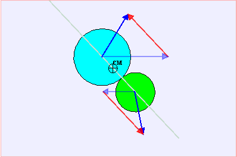

所述EJS彈性碰撞動畫模型允許用戶模擬二維彈性碰撞。用戶可以修改的質量 位置和使用滑動紐調整兩顆球的速度。 兩個磁盤也可拖動和質量的中心示出了一個 橫在模擬。
一個複選框選項允許用戶暫停當發生模擬碰撞。淡藍色箭頭表示球的動量，深藍色的箭頭顯示了碰撞後的動量。 兩球動量變化量相等方向相反，並且動量改變方向平行於 兩球中心連線。
牛頓力學預測，一個獨立系統的總 動量守恆。彈性碰撞可以被說成是能量守恆的，因為球彈開每個 其他的球。
守恆定律在物理學中發揮極大的作用，大多數物理學家認為他們是根本法則 。在彈性碰撞模型，能量和動量守恆被用來計算兩個球的軌跡。 動量改變可以假定成瞬時的相互作用 沿著連心線，顆粒接觸時。由於 顆粒不只是這短暫的瞬間互動，我們計算時只需要考慮動能 即該系統的總能量。
Etotal = (1/2) m1 v12 + (1/2) m2 v22
該系統的總動量容易計算，並且是 兩個球的動量加總。
ptotal = m1 v1 + m2 v2
解聯立方程即可得出速度的改變
The Elastic Collision model was created by Fu-Kwun Hwang using the Easy Java Simulations (EJS) modeling tool. It was adapted to EJS version 4.1 by Wolfgang Christian and Robert Mohr at Davidson College. You can examine and modify the model for this simulation if you have Ejs installed by right-clicking within the simulation frame and selecting "Open Ejs Model" from the pop-up menu. Information about EJS is available at: <http://www.um.es/fem/Ejs/> and in the OSP ComPADRE collection <http://www.compadre.org/OSP/>.